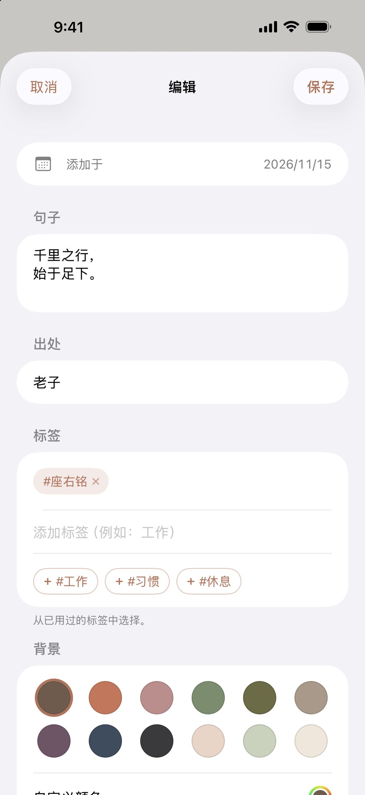

Kotoba · 使用指南 · 日本語
如何把自己的话或喜欢的名言放到 iPhone 主屏幕上
座右铭、书里或电影里的一句话、对自己的承诺。存在备忘录里，很快就被淹没了。放在小组件上，每次拿起手机都能看到。
下面介绍如何用 Kotoba（一款自定义文字小组件）来实现。可免费保存 20 条句子，并在小组件上免费显示 1 条句子。
1. 保存你的文字
- 打开 Kotoba，轻点右下角的 + 。
- 在以下栏目输入文字： 句子。
- 可选：添加 出处 （一本书、一部电影、一位朋友）， 标签 以及小组件的 背景 颜色。
- 轻点 保存。
第一次打开 Kotoba 时，会有几条示例句子。可以保留，也可以删除。

2. 把小组件放到主屏幕上
- 在主屏幕的空白处按住。
- 轻点 编辑 （或 +），它在屏幕顶部角落，然后搜索 “Kotoba”。
- 选择小、中或大尺寸，然后轻点 添加小组件。
3. 选择要显示的文字
按住小组件，轻点 编辑小组件，然后在以下栏目选择文字： 句子。如果不选择，会显示列表中的第一条句子。轻点小组件，可在 App 中打开那条句子。

在锁定屏幕上
按住锁定屏幕，轻点 自定，选择锁定屏幕，轻点小组件区域，然后添加 Kotoba。锁定屏幕有三种样式可选。选择句子的方法相同，使用“编辑小组件”。
想要更多？
Kotoba Pro 是一次买断，不是订阅：
- 句子数量不限
- 小组件数量不限，每个可显示不同的文字
- 每天、每周或每小时从你自己的句子中换一条新的（也可以按标签缩小范围）
- 每个小组件可单独设置字体、字号和对齐方式
- 导入备份和 iCloud 同步，适用于新设备或第二台设备
常见问题
需要注册账户或订阅吗？不需要。你的句子只保存在 iPhone 上。可免费保存 20 条句子，小组件上可免费显示 1 条句子。Kotoba Pro 是一次买断，不是订阅。
我的小组件显示“Pro 版可显示”。免费版中，小组件只显示 1 条句子。想显示其他文字，请在 Kotoba 中打开菜单（…），轻点“更换小组件上的句子”，然后按住小组件，轻点“编辑小组件”，选择新的句子。让多个小组件同时显示不同的句子属于 Pro 功能。
文字可以每天自动更换吗？可以，需要 Pro：在“编辑小组件”中，把“显示方式”设为“每天更换”“每周更换”或“每小时更换”。它会从你自己的句子中挑选，也可以按标签缩小范围。
存满 20 条句子会怎样？已保存的内容不会被删除，只是不能再添加新句子。升级 Pro 后可以想加多少就加多少。
在 App Store 获取 Kotoba
无订阅、无广告、无通知、无需账户。· 关于 Kotoba
English · 日本語 · 简体中文 · 繁體中文 · 한국어 · Deutsch · Français · Español · Italiano · Nederlands · Polski · Português · Русский · ไทย · Türkçe · Українська · Tiếng Việt · Bahasa Indonesia